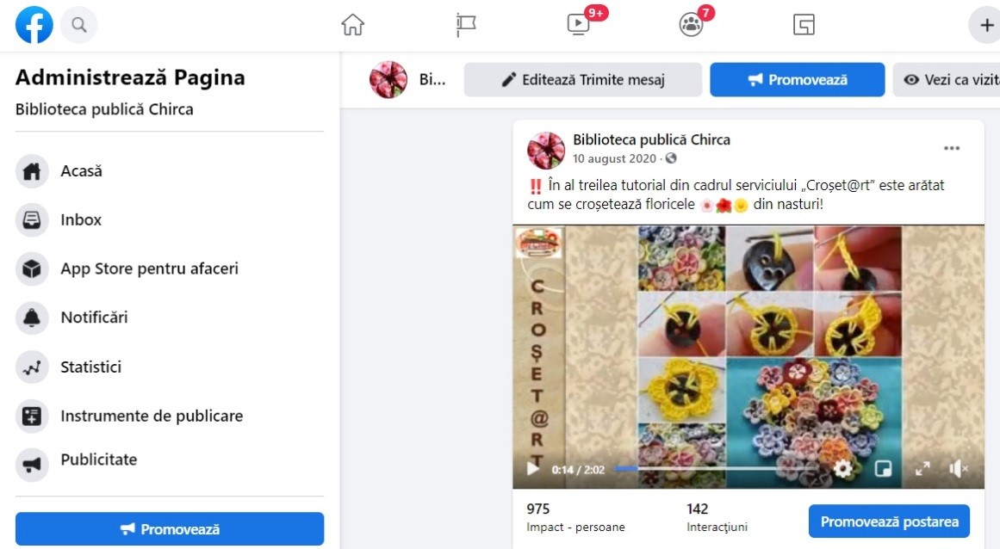
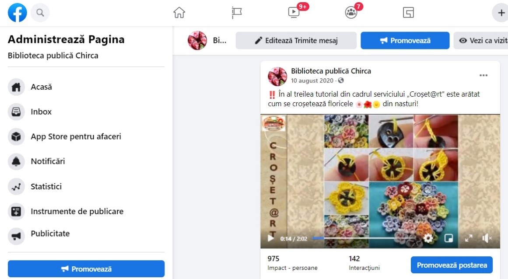

Biblioteca Publică Teritorială Chirca
Biblioteca Publică Teritorială Chirca

Servicii
Serviciile de bază gratuite
- Turul sau prezentarea bibliotecii pentru public și/sau utilizatori (vizite la bibliotecă).
- Orientarea și îndrumarea în spațiile bibliotecii.
- Oferirea materialelor promoționale ale bibliotecii.
- Accesul, în incinta bibliotecii și/sau de la distanță, la instrumentele de informare despre resursele informaționale și serviciile bibliotecii.
- Accesul la echipamentul bibliotecii (calculatoare, tablete, printere etc.)
- Împrumutul la domiciliu al documentelor tipărite.
- Consultarea pe loc a documentelor.
- Rezervarea documentelor de bibliotecă care nu sunt disponibile la momentul solicitării.
- Oferirea accesului la Internet prin intermediul echipamentului bibliotecii.
- Instruirea utilizatorilor cu ajutorul mijloacelor electronice.
- Instruirea nonformală a utilizatorilor în vederea alfabetizării digitale a acestora (MS Word).
- Organizarea de expoziții ale colecțiilor proprii ale bibliotecii
- Organizarea programelor și a activităților cu caracter literar, cultural, educativ, social, (întâlniri cu scriitorii, lansări și prezentări de carte, mese rotunde etc.)
- Instruire nonformală în diverse domenii (educație mediatică, educație electorală) sau privind dezvoltarea altor abilități personale și/sau profesionale, în limitele parteneriatelor încheiate.ș.a.

Servicii de instruire formală și nonformală a utilizatorilor.
- Calculatorul pentru toţi
Argument: În vederea promovării cărții și a lecturii cu ajutorul tehnologiilor
informaționale
Biblioteca Publică din Chirca dorește să livreze serviciul modern de bibliotecă
„Calculatorul
pentru toți”. Ținând cont că nu toți oamenii din comunitate au internet și calculator acasă,
nu
toți dețin abilități de utilizare a acestora, Biblioteca a găsit soluția de a-i ajuta pe cei
ce
vor să cunoască mai mult în utilizarea mai eficientă a calculatoarelor. Oricine poate să
beneficieze de instruiri gratuite livrate la bibliotecă.
În urma trainingurilor ce vor fi livrate la bibliotecă, participanţii vor deține abilități
și
competențe de utilizare a tehnologiilor informaționale: navigare pe internet, lucru cu
programul
WORD.
Scopul serviciului: De a atrage câţi mai mulţi utilizatori pentru a utiliza eficient
calculatoarele şi a cunoaşte cât mai bine să navigheze pe internet, să lucreze în programul
WORD, să poată face un document, un tabel etc.
Servicii de instruire formală și nonformală a utilizatorilor.
- EduJoc
Argument: În urma sondajului realizat de Negru Marina în 3 locuri publice: Grădinița de
copii ,,Andrieș” Chirca, Oficiul Poștal și Bibloteca Publică, s-au descoperit necesitățile
locuitorilor din comunitate, care ar dori ca la Bibliotecă să fie organizată ora jocurilor.
Deaceea din luna iunie periodic se desfășoară o serie de activități în cadrul SNB ,,EduJoc”
. La acest serviciu participă diferiți copii de orice vârstă. Pentru fiecare zi sunt
planificate activități cu jocurile educative câștigate de Biblioteca Publică din Chirca la
un concurs lansat de Programul Novateca la finele anului 2015: lotto, dame, constructore,
blocuri de constructive, puzzle, twister. Copiii petrec un timp liber cât mai distractiv în
această perioadă. Acest serviciu este implementat pe tot parcursul verii în vacanța mare a
copiilor.
Scopul serviciului: De a atrage câţi mai mulţi utilizatori la bibliotecă pentru a petrece un
timp liber cât mai eficient şi mai distractiv. De a dezvolta atenția, gândirea,
creativitatea, agerimea copiilor prin aplicarea diferitor jocuri educative.
Servicii de instruire formală și nonformală a utilizatorilor.
- E-GovService
Majoritatea oamenilor din localitate se confruntă lunar cu rândurile mari la Oficiul Poștal
sau la ghișeele băncilor care se află în altă localitate, cu programul de reîncarcare sau de
achitare a abonamentului telefonului mobil, cu depunerea declarației de avere și interese
personale: uneori chiar din lipsa de timp liber pot să întârzie cu achitările serviciilor
comunale. Din aceste motive devine o dificultate achitările la timp a tuturor serviciilor
sau a depunerii declarației de avere în termenul stabilit.
Ținând cont de această situație dificilă creată în comunitate, Biblioteca Publică a reușit
să găsească o soluție pentru rezolvarea acestor probleme și să implementeze serviciul modern
de bibliotecă „e-govService”.
Scopul: De a informa populația despre oportunitatea de a achita serviciile comunale
online și de a ajuta la depunerea declarației de avere și interese personale online.

Servicii de instruire formală și nonformală a utilizatorilor.
- Croșet@rt
În perioada stării de urgență în RM privind infecția COVID-19, nu se permite desfășurarea
activităților socio-culturale la bibliotecă. Pentru că în ultima perioadă toată activitatea
se desfășoară online, Biblioteca Publică Chirca vine cu o idee de a posta pe Facebook
tutoriale de croșetare a diferitor lucrări. Utilizatorii vor fi îndemnați să urmărească pas
cu pas croșetarea floricelelor, frunzulițelor etc pentru o compoziție de vară. Oricine va
avea acces la informație privind serviciul „Croșet@rt”.
Tutorialele se elaborează în Programul Microsoft Power Point. Sunt plasate imagini și
instrucțiuni pentru fiecare pas. Fiecare prezentare este salvată sub formă de video însoțită
de câte o muzică frumoasă.
Scopul: Dezvoltarea abilităților de lucru cu croșeta și propunerea celor pasionați de
croșetare să împletească o compoziție frumoasă de vară și semne de carte.
Croșet@rt
Croșet@rt
Croșet@rt
Croșet@rt
 
